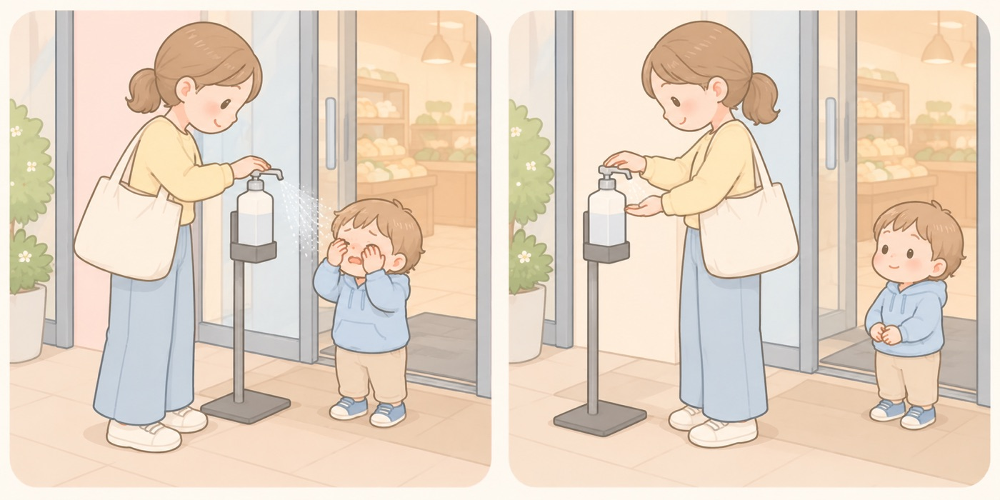

外出先と家の中
消毒剤・除菌剤
店の入口の自動噴霧は、子どもの顔の高さに出る。詰め替えた携帯ボトルは誤飲されている
手指消毒は、毎日何度も繰り返す動作になりました。消費者庁に寄せられている事故は、報告されている年齢がほとんど1〜2歳です。家の中の保管だけでなく、店の入口で親が消毒する場面でも起きています。

- しないこと：店の入口で消毒するとき、子どもをそばに立たせない
消費者庁は、設置されている消毒剤は、子どもの身長によっては顔の高さで噴霧されるとしています。押す前に、噴射の向きとそばに人がいないことを確かめます。手をかざすと出るタイプには、近づかせません。 - すること：目に入ったら、こすらせずにすぐ洗う
消費者庁は、眼をこすらないように注意して、直ちに洗眼するよう求めています。こすると刺激が広がります。水で洗ってから、痛みが続くなら受診します。 - しないこと：携帯用の容器を、かばんの外ポケットに入れない
詰め替えた携帯ボトルを30ml飲んで点滴を受けた2歳の事例があります。消費者庁は、幼い子どもが簡単に取り出せないように、かばんの中にしまうよう求めています。隠すのではなく、高さと扉で遠ざけます（7〜11か月タブ「医薬品・洗剤・たばこの誤飲」）。 - すること：手洗いで足りる場面では、石けんで洗う
消費者庁は、手や指の消毒には、石けんやハンドソープを使った丁寧な手洗いを行うことで十分にウイルスを除去できるとしています。家の中で使う量を減らせば、置き場所の問題も減ります。 - すること：飲んだかもしれないときは、中毒110番に相談する
大阪（365日24時間）072-727-2499、つくば（365日9〜21時）029-852-9999です。成分や量によっては、ひどい中毒症状が出ることがあります。
報告されている事例（消費者庁・医療機関ネットワーク）
誤飲
「外出先で人と会って話していた。ふと子どもを見ると除菌剤のボトルと蓋を手に持って苦そうな顔をしていた。 飲んだ量は分からなかったが、通院が必要となった。 ボトルは電話機の後ろの目につかない場所にあったが、子どもの目の高さ位で手が届いた。」（1歳）
眼に入る
「買い物中に店舗の噴射状のアルコール消毒剤が顔面にかかった。 まぶたや頬が赤くなったので、店舗と帰宅後に水で顔を洗い病院を受診した。」（2歳）
この項目の根拠
- 子ども安全メール Vol.583 消毒剤・除菌剤の取扱いに留意しましょう。誤飲や眼に入る事故の発生が続いています！（消費者庁）（新しいタブで開きます）
日本中毒情報センターによると自宅や店舗等で消毒剤・除菌剤が眼に入ったという相談が寄せられていること。消費者庁・国民生活センターには医療機関からも同様の事故情報、誤飲に関する子どもの事故情報が寄せられていること。成分や量によっては誤飲するとひどい中毒症状が出ることがあること。目に入ると刺激があり、皮膚の弱い部分に付着すると炎症を起こすこともあり、眼に入った場合は眼をこすらないように注意して直ちに洗眼すること。店舗などに設置されている場合は、子どもの身長によっては顔の高さで噴霧されることがあること。1歳が外出先で除菌剤のボトルと蓋を手に持ち苦そうな顔をしていて通院が必要となった事例（ボトルは電話機の後ろの目につかない場所にあったが子どもの目の高さ位で手が届いた）。2歳が携帯用の容器に詰め替えた除菌アルコールジェルを30ml程度誤飲し救急外来で点滴を受けた事例。2歳が店舗のスタンド型アルコール消毒剤で保護者が消毒した際に近くにいて「目が痛い」と訴え受診した事例。2歳が買い物中に店舗の噴射状のアルコール消毒剤を顔面にかけられ、まぶたや頬が赤くなり受診した事例。消毒剤・除菌剤は使用方法・有効成分・濃度・使用期限などを確認し、情報が不十分な場合には使用を控えること。手や指の消毒には石けんやハンドソープを使った丁寧な手洗いでも十分にウイルスを除去できること。家庭では子どもの手の届かないところに保管すること。携帯用の容器で持ち歩く場合は、幼い子どもが簡単に取り出せないようにかばんの中にしまうなどの工夫をすること。設置型のディスペンサーは子どもが近づかないように注意し、とくに自動で薬液が噴霧されるタイプは興味本位で触らないように言い聞かせること。使用する際はそばに人がいないことを確かめ、噴射方向を確認してから使用すること。 - Vol.561 家庭内での医薬品や洗剤の誤飲を防止しましょう!（消費者庁）（新しいタブで開きます）
医薬品は子どもの手の届かない場所、見えない場所に保管すること。1メートル以上の高さや扉のある場所に保管していても、踏み台を使って手を伸ばしたり、扉を開けたりして取り出してしまうことがあること。